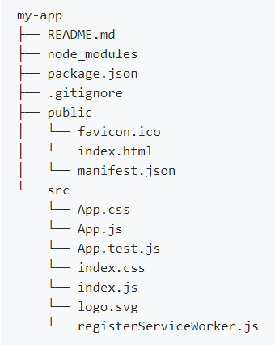

Primeros Pasos
ReactJS 101
¿Por qué ReactJS?
- Angular VS React
- ¿Esta de moda?
- Metodología de componentes
Michelle Torres
Lead Software Engineer at TiempoDevelopment • Professor at UdG •
Founder & CTO at @CORBmx • Speaker • Free software advocate • Crazy
- michelle.torres@corb.mx
- fb.com/michelletorres.mx
- nmicht
- nmicht
Instalar NPM
Para iniciar, tenemos que instalar NPM.
NPM (node package manager) es el gestor de paquetes javascript de
NODE.JS, y te recomiendo instalarlo usando.
NVM
NVM es el Gestor de Versiones de Node.
Instalación
Instalar create-react-app
npm install -g create-react-app
Tip: -g lo utilizamos para indicar que será una
instalación global.
Crea tu primer App
-
Crear tu app
create-react-app pomodorito
-
Arrancar el servidor de pruebas en una consolado por aparte
cd pomodorito/
npm start
Para arrancar el servidor, puedes usar también
yarn start
Estructura de tu App
Todo tu código fuente incluídos assets va en src, es la
que se compila.
public tiene todo lo público al servidor web estático.

Entendiendo el archivo App.js
Componente del contador
-
Crear carpeta de componentes
cd src
mkdir components
-
Crear carpeta para el componente de contador
cd components
mkdir Counter
Tip: Nuestro componente por estándar se define en CamelCase.
-
Crear archivo del componente como tal
cd Counter
touch Counter.js
-
Crear archivo para manejar la carpeta como módulo
touch index.js
Tip: ReactJS cuando hace un import de un folder, busca un index.js
En el archivo Counter.js vamos a crear un componente representacional.
También se le conoce como stateless component.
Este componente será el contador de nuestro pomodorito.
import React from 'react';
const Counter = () => {
return (
00:00
);
}
export default Counter;
Ahora a nuestro index.js le diremos que utilice nuestro componente Counter
import Counter from './Counter';
export default Counter;
Rendereamos nuestro componente Counter
-
Importamos nuestro counter
import Counter from './components/Counter';
-
En el render agregamos el componente
import Counter from './components/Counter';
...
render() {
return (
...
);
}
...
Props
-
Son las propiedades de los componentes. Estos se le pasan al
componente desde el componente padre.
-
En el renderizado del componente se definen como si fueran atributos de
html.
-
En la declaración del componente se usan a través del objeto
props.
const Counter = (props) => {
return (
{props.minutes}:{props.seconds}
);
}
Destructurización
Para simplificar el uso de los props usamos la destructurización, que
extrae los valores del objeto.
const Counter = ({minutes, seconds}) => {
return (
{minutes}:{seconds}
);
}
Componente de acciones Pomodoro
Crear carpeta para el componente de contador
cd components
mkdir Pomodoro
Tip: Nuestro componente por estándar se define en CamelCase.
-
Crear archivo del componente como tal
cd Pomodoro
touch Pomodoro.js
-
Crear archivo para manejar la carpeta como módulo
touch index.js
Tip: ReactJS cuando hace un import de un folder, busca un index.js
En el archivo Pomodoro.js vamos a renderear todo nuestro Pomodorito
import React from 'react';
import Pomodoro from '../Pomodoro';
const Pomodoro = () => {
return (
{ /*...botones...*/ }
);
}
export default Pomodoro;
Ahora a nuestro index.js le diremos que utilice nuestro componente Pomodoro
import Pomodoro from './Pomodoro';
export default Pomodoro;
Modificamos nuestro archivo App.js para renderizar el Pomodoro y ya no
el Counter.
import React, { Component } from 'react';
import Pomodoro from './components/Pomodoro';
...
class App extends Component {
render() {
return (
...
...
);
}
}
export default App;
La biblioteca moment.js
moment se usa para manejo de fechas en
JS.
- Dentro del folder de Pomodorito instalamos la biblioteca
npm install moment --save
Tip: --save es para que se guarde como dependencia en nuestro proyecto.
Agregamos moment al Counter
import React from 'react';
import moment from 'moment';
const Counter = ({time}) => {
return (
{moment(time).format('mm:ss')}
);
}
export default Counter;
Indicamos al counter la cantidad de tiempo
que queremos mostrar.
Este cambio se hace en los props.
El tiempo es en milisegundos.
Constructor de un componente